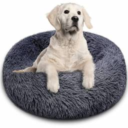
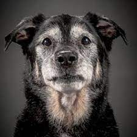

Nutricion de tu mascota
¿Sabes cómo cuidarlas para que estén sanas y así demostrarles tu cariño?
Su alimentación, como la de cualquier ser vivo, es muy importante para que tengan un desarrollo sano y se mantengan libres de enfermedades. Como ellos han sido domesticados por el hombre, su alimentación es responsabilidad de sus dueños. Los perros y los gatos, si bien son diferentes entre sí, también lo son del hombre. Tienen necesidades nutricionales distintas y algunos de nuestros alimentos pueden hacerles daño. Por esto, les tienes que dar un alimento balanceado especialmente preparado para ellos. Los perros y los gatos, si bien son diferentes entre sí, también lo son del hombre. Tienen necesidades nutricionales distintas y algunos de nuestros alimentos pueden hacerles daño. Por esto, les tienes que dar un alimento balanceado especialmente preparado para ellos.
¿Sabias que?
Se encuentran en una etapa de gran crecimiento, por lo que necesitan un alimento rico en proteínas y en otros nutrimentos esenciales. Como tienen un estómago pequeño que no les permite almacenar mucho alimento se les debe alimentar de 3 a 4 veces al día.
Los perros adultos necesitan una dieta de mantenimiento que no sea demasiado alta en grasas, pero que sí contenga las cantidades correctas de los 36 nutrientes diferentes que un perro necesita para mantenerse sano. Se les puede alimentar 1 ó 2 veces al día.
El metabolismo se hace más lento en los perros de mayor edad, entre los 6 y los 9 años, por lo que necesitan menos alimento o más fibra para evitar que engorden. Su comida deberá tener ingredientes que les proporcionen toda la nutrición que necesitan.
Consejos para tener una mascota sana y feliz
- Si tu mascota come comida casera, puedes hacerle el cambio a
alimento completo y balanceado poco a poco, de la siguiente manera:
- Sigue dándole comida casera añadiéndole un poco de alimento completo y balanceado.
- Cada día añade más alimento completo y disminuye una pequeña cantidad de comida casera, de tal manera que en 12 días tu mascota esté comiendo alimento balanceado únicamente. A partir de que lo haga, no vuelvas a mezclar comida casera, ya que estarías desbalanceando la nutrición exacta que requiere.
- Procura alimentar a tu mascota en el mismo lugar y a la misma hora para establecer una rutina. Trata de que sea antes de las horas de tus comidas y nunca le des de tus alimentos.
- Además de la edad, existen otros factores que debes considerar
para escoger el mejor alimento para tu mascota, como:
- Tamaño: chico mediano o grande
- Nivel de actividad: activo, normal o sedentario.
- Condición: obesidad, mantenimiento.
- Estado general de salud, ya que si tu mascota lo requiere, también encontrarás alimentos especiales para ayudar a combatir problemas cardiacos, renales, gastrointestinales, hepáticos y diabéticos. Tu veterinario es quien mejor te podrá orientar en este caso.
- Características y gustos individuales.
- Tu mascota siempre deberá tener agua fresca en un recipiente limpio. Es importante que se la cambies con regularidad.
- Y no olvides que una forma muy importante de demostrarle tu
cariño y preocupación por ella es:
- Proporcionándole una alimentación balanceada, según sus características individuales.
- Dándole los cuidados adecuados, como visitas regulares al veterinario y ejercicio.
- Evitándole sufrimiento. No la dejes sola por mucho tiempo, ni amarrada o encerrada en lugares reducidos durante todo el día. Pero sobre todo, dale mucho cariño y un buen trato. Ella te dará a cambio compañía y amor incondicional.
Consiente a tu mascota eligiendo alimento completo y balanceado
Nutricion
Los alimentos completos y balanceados contienen TODO lo que tu perro o gato necesita para estar bien nutrido. No necesitas añadir absolutamente NADA para sentirte tranquilo de estar alimentando a tu amigo de forma que no le haga falta ningún elemento de nutrición para su crecimiento, desarrollo y belleza física.
Salud
El equilibrio nutricional y la calidad de los ingredientes en los alimentos completos y balanceados contribuyen a que las mascotas vivan de una forma mucho más sana, ya que gran parte de su buena o mala salud depende justamente de la alimentación. Además, dentro de los alimentos completos y balanceados encuentras el producto exacto para la edad y actividad específica de tu perro o gato, asegurando así una óptima alimentación.